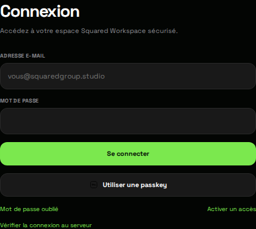

Me connecter à Workspace
Distinguer compte Workspace et Help Center, récupérer son accès et comprendre une erreur de connexion.
Vérifier le bon compte
Ouvrez le portail web Workspace. Son écran Connexion n’est pas celui du centre d’aide. Une inscription au forum ne donne pas automatiquement accès à un projet client ou à l’équipe.
Premier accès ? Commencez par activer l’invitation. Compte déjà activé ? Utilisez les étapes suivantes.
Me connecter
- Dans Adresse e-mail, saisissez l’adresse liée à votre espace.
- Renseignez votre Mot de passe, puis sélectionnez Se connecter.
- Si Vérification renforcée apparaît, utilisez votre passkey ou l’un de vos codes de récupération, selon les options réellement proposées.
- Après ouverture, contrôlez le contexte et les rubriques accessibles. N’utilisez pas le compte d’une autre personne pour retrouver une donnée.

Mot de passe oublié
Sur Connexion, choisissez Mot de passe oublié, entrez votre adresse et sélectionnez Envoyer le lien. Le portail affiche un message neutre, même si le compte n’existe pas : ce message n’est pas une confirmation de l’existence du compte.
Ouvrez le lien reçu. Si le portail propose Saisir un code reçu, utilisez le code de réinitialisation dans ce formulaire, puis le nouveau mot de passe. Ne partagez ni ce lien ni ce code.
Après une mise à jour réussie, revenez à Connexion et utilisez le nouveau mot de passe. Une demande de réinitialisation ne crée pas un espace et ne remplace pas une invitation.
Passkey et erreurs de réseau
Une passkey dépend de l’appareil et du domaine sur lequel elle est utilisable. Si elle est refusée sur le portail web, utilisez seulement les alternatives prévues : mot de passe et, si demandé, code de récupération. Ne désactivez pas un contrôle de sécurité pour contourner l’erreur.
Le lien Vérifier la connexion au serveur aide à distinguer une erreur de réseau d’une erreur d’identifiants. Si le navigateur bloque l’accès à l’API, répéter les mots de passe ne corrige pas la configuration du serveur. Signalez le message exact, pas vos codes.
Besoin d’une autre voie ?
Vous n’avez plus accès à votre messagerie ou aucun moyen de seconde vérification ? Utilisez le parcours de récupération d’accès. Une vérification par l’équipe peut être nécessaire ; ce guide ne permet pas de contourner l’identité.
Procédure vérifiée sur le code du portail web Squared Workspace du 18 septembre 2026. Les captures montrent les formulaires réels sans données personnelles. Elles ne prouvent pas la disponibilité actuelle du serveur et ne représentent pas l’interface de l’application native. Source de la procédure web.